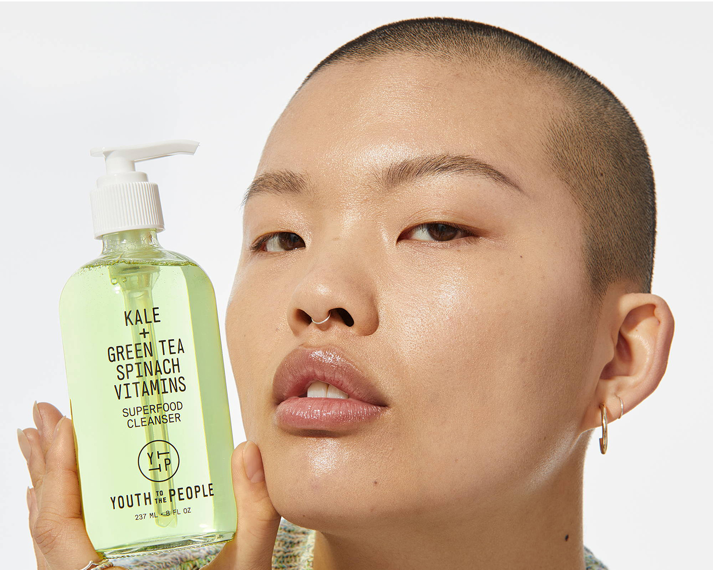
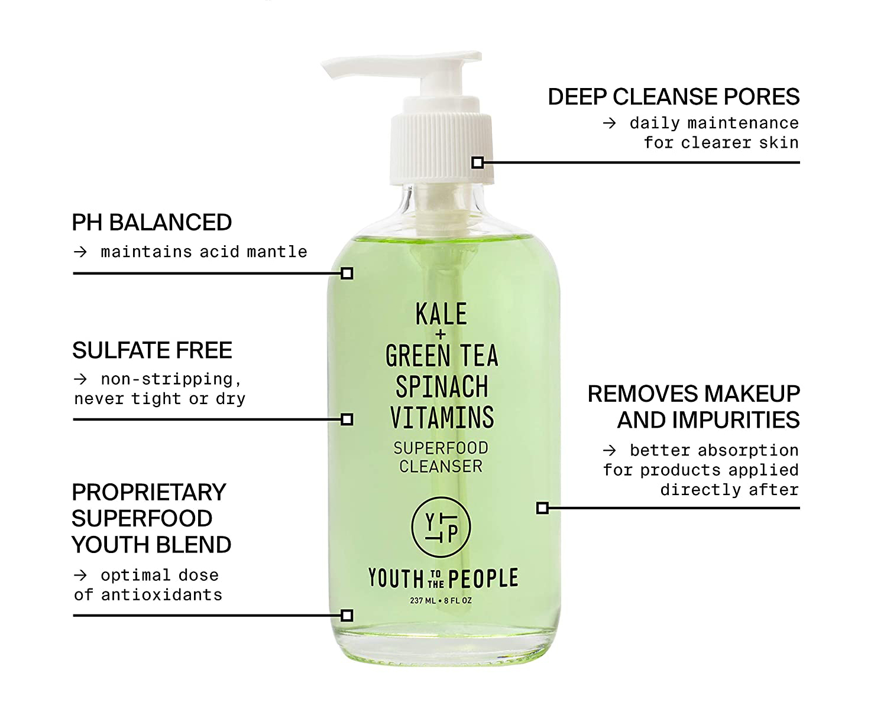
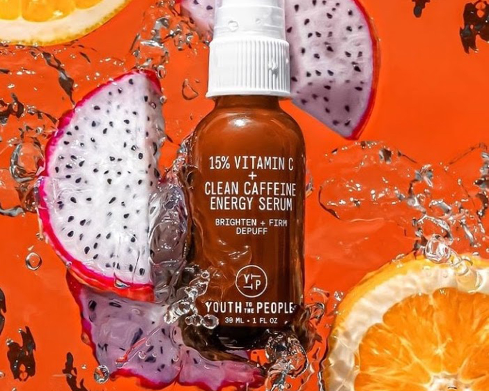
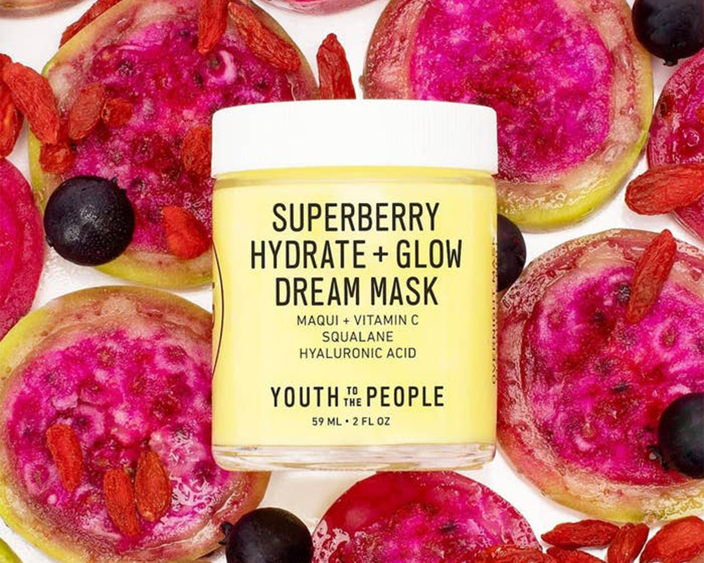

Farmacy Releases the New Daily Greens Oil-Free Gel Moisturizer
Farmacy gives us a peek at their new skincare releases that will be coming out early next month.

Superfood cleanser

Superfood cleanser info graphicYouth to the People common ingredientsCleansing setHard greens and superfoods nutrient set

Dragon fruit serum

Superberry MaskKombucha exfoliating toner